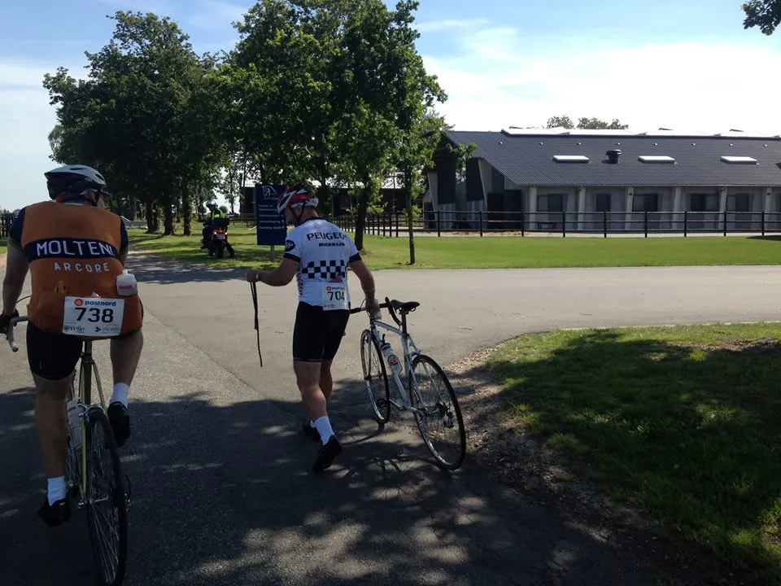
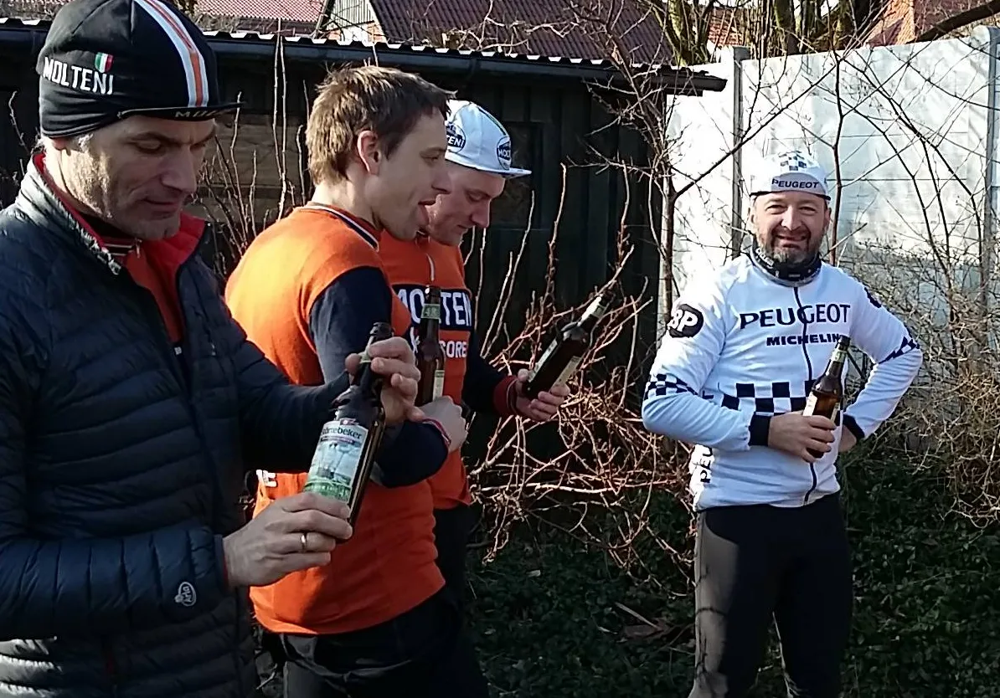

Listen very carefully, we shall say this only once…

P R E S S E M E D D E L E L S E:
Squadra Molteni indgår joint-venture med Capitaine l’equipe Morten Mejsen fra Team Peugeot Re-Cycled i forbindelse med Paris-Roubaix.
Når Squadra Molteni på lørdag tager kampen op med de nordfranske pavéer, bliver det i samarbejde med Morten Mejsen fra Team Peugeot Re-Cycled. Morten har tidligere kørt Paris-Roubaix, og kender de nordfranske pavéer som sit eget rødvinsglas.
– Vi kan nu meddele, at Squadra Molteni har indgået en joint-venture-aftale med Capitaine l’equipe fra Team Peugeot Re-Cycled, fortæller Kasper Sørensen fra Squadra Molteni HQ.
Morten har samtidig lovet, at efterspænde sin Peugeot-cykel, så den ikke rasler fra hinanden, når vi rammer den første pavé.


Fra Team Peugeot Re-Cycled’s HQ kan de også bekræfte aftalen:
– Ja det pølseædende belgisk-itailienske hold ville hyre mig til at køre i orange trøje. Men næ nej, der sætte jeg grænsen. Team Peugeot Re-Cycled lader sig ikke hyre, som en gang letkøbt fransk fremmedlegionær, lyder der fra Morten Mejsen, der fastslår, at der er tale om en joint-venture d’entreprise.


Squadra Molteni kan ikke afsløre hvordan samarbejdsaftalen er beseglet – men vil dog godt røbe, at der ved forhandlingerne blev konsumeret en del billig fransk rødvin og mørk belgisk øl.